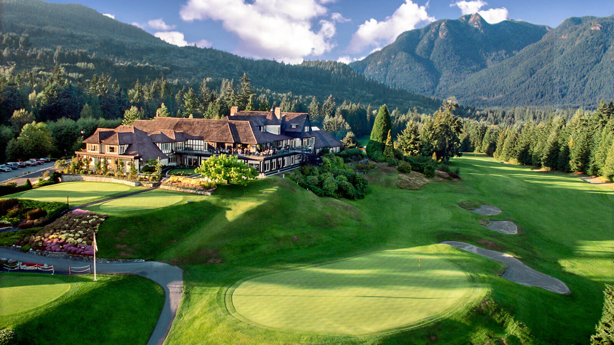

Renowned for its panoramic beauty, The Fairmont Banff Springs Golf Course in Alberta is a captivating and challenging layout set in the heart of Canada's Rocky Mountains.
This Alberta golf course offers just two simple things for the perfect golf vacation. First, a breathtaking view in every direction and second, a magnificent layout that thrills every golfer fortunate enough to spend a day here. Amateurs and professionals alike are constantly amazed by its challenging layout. From the actual hole design to the optical illusions created by the surrounding mountains, this Alberta golf course will delight and tempt you.
Capilano Golf and Country Club combines natural beauty with world-class design to offer members an exclusive golfing experience. Carved out of the rainforest and designed by the renowned Stanley Thompson, generous treelined fairways, artistic bunkers and spectacular greensites make Capilano challenging and enjoyable for players of all abilities. The course has a uniquely West Coast style, set against the backdrop of the North Shore Mountains with spectacular views of Vancouver and beyond.
The Club's members are passionate about golf but equally enthusiastic about enjoying all aspects of the North Shore lifestyle. Before or after a game, meet old friends and make new connections while enjoying the elegant ambience and excellent cuisine of our stately clubhouse.

Top 10 of the Best 100 Golf Courses in the CountryFor Pictures and more information about these top 10 courses in the country please follow the link bellow Top 10 Courses Photos